TIL: Find and replace in Vim
:substitute command
Background
Today I learned how to find and replace in Vim. I’ve found knowing a few variations of the substitute (:s or su for short) command to be a powerful skill to quickly and efficiently edit code and text within a file. By knowing a few simple command variations, you can greatly improve your productivity. You just have to know the different patterns and when to apply them.
This TIL post aims to highlight some of the basics of using Vim’s :s command. My intention is to get you up and running quickly. As such, this post provides several simple examples applying the command to some practical use cases. Although most of the examples use the R programming language, these concepts can be applied to any programming language or text editing task.
This post focuses on the basics. Indeed, the substitute command provides a lot of utility and different options to perform various find and replace editing tasks. If you’re looking to learn more advanced features, I suggest reading the docs (:help substitute). I also provide some additional links to other resources throughout and at the end of the post if you’re interested in learning more.
The :substitute command
The :substitute command searches for a text pattern, and replaces it with a text string. Use the following command pattern to execute find and replace when using Vim:
:[range]s[ubstitute]/{pattern}/{string}/[flags] count
What can :substitute do?
The basics
:s can be used to find each occurance of a text string, and replace it with another text string. Say I have a character vector basket, and it contains an assortment of fruit. However, what if I want to replace the first apple in my basket with an orange using :s? First, I need to move my cursor to the line I want to find the first string. Then, I can enter the following into the command prompt to find the first instance of the string orange and replace it with the string apple:
:s/orange/appleHere is what this looks like in action.
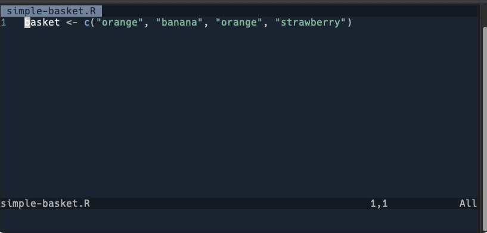
However, what if I don’t want any oranges, and instead I just want apples rather than orangesin my basket. I can append the previous command with g to replace all instances of orange with apple. The g flag indicates to Vim that I want to replace globally to the current line. In other words, replace all instances on the current line.
:s/orange/apple/gBelow is what this will look like in your editor.
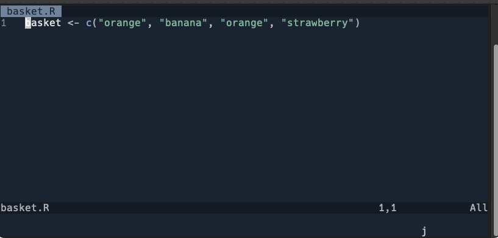
Want to find and replace text globally to the line and including multiple lines, then add % to the beginning of the command.
:%s/orange/apple/g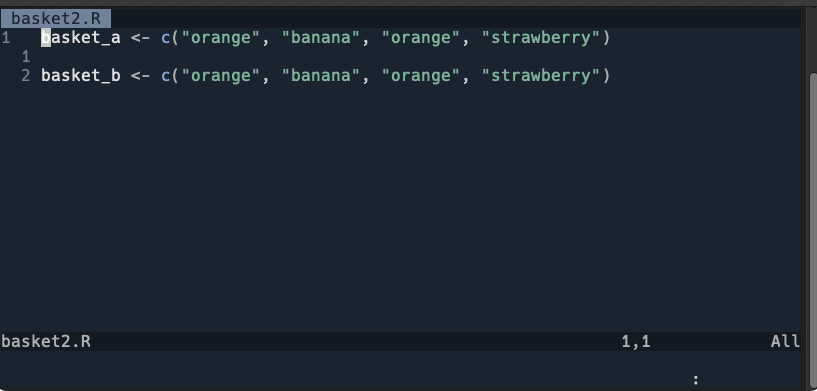
% is really useful if you want to refactor code efficiently within a file. Check out these two examples, one more contrived, the other a more practical, common application.
:%s/power/horsepower/g
:%s/data/cars_data/g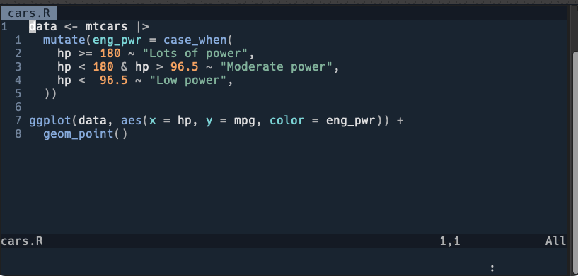
Confirming replacement
Not sure what all will be replaced and would rather go through each replacement step-by-step? Add c to the end of your command. Adding this flag will make Vim prompt you to confirm each replacement.
:%s/orange/apple/gc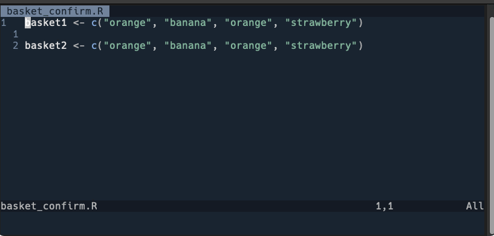
In the prompt, you’ll see something like replace with apple (y/n/a/q/l/^E/^Y). You’ll select the option that fulfills the action you want to perform. Here is a list of what each selection does:
y- substitute this one match and move to the next (if any).n- skip this match and move to the next (if any).a- substitue all (and it’s all matches) remaining matches.q- quit out of the prompt.l- subsitute this one match and quit.lis synonymous with “last”.^E- orCtrl-ewill scroll up.^Y- orCtrl-ywill scroll down.
The example above only highlights the use of y, so I suggest experimenting with each selection to get a feel for what they do.
Replacing by range
Take a look at the command pattern again, specifically the first portion, [range]:
:[range]s[ubstitute]/{pattern}/{string}/[flags] count
The s command provides functionality to scope the find and replace operation to a specific part of your file. Indeed, this functionality was highlighted earlier when we passed % in an earlier command. % just indicated to Vim that we wanted to find and replace all lines in the file. However, we can be more specific.
Say we now have a much larger basket, one that can hold both fruits and veggies. In the R programming language, this can be modeled using a tribble from the tribble package.
What if we wanted to find the first two instances of carrots in our basket and replace it with kale. This can be done by passing a range at the start of the :s command. In this specific instance, I want to find and replace the carrots on lines 5 and 7 with the string kale, but I don’t want to change the one on line 8. To do this, I can run the following command:
:5,7s/carrot/kale/g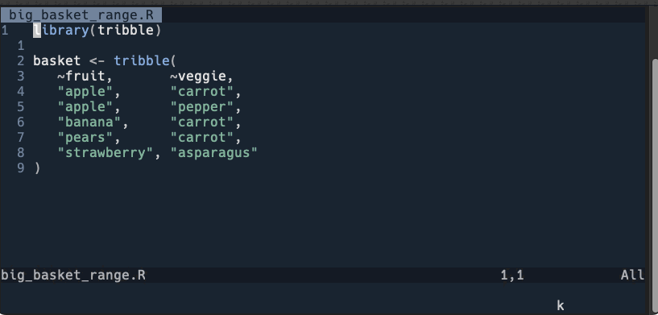
Another variation is to start on your current line . and specify to Vim how many additional lines I would like to find and replace in the range. Keep in mind . represents the current line your cursor is located currently within the file. Once you postion your cursor, your command will look something like this:
Replacing from current location to n lines
:.,+2s/carrot/kale/g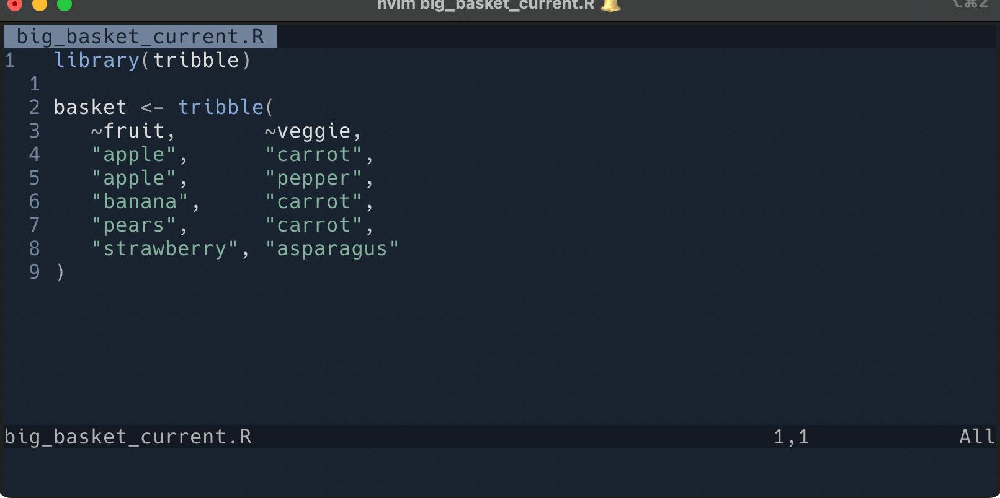
What if I had a basket with even more fruits and veggies, and I just wanted to start at my current location and replace all instances that follow? We can use the $ in the range input. The use of the dollar sign indicates to Vim that we want to replace starting at line 8 and go to the end of the file.
Replacing to end of file
:8,$s/carrot/kale/g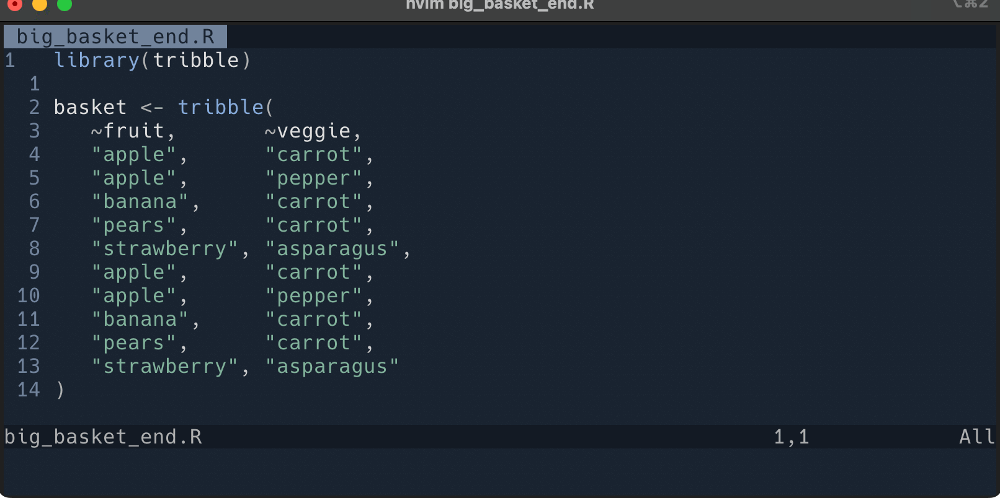
Or, if you want to start from the current line and replace to the end of the file, you can do the following:
:.,$s/carrot/kale/g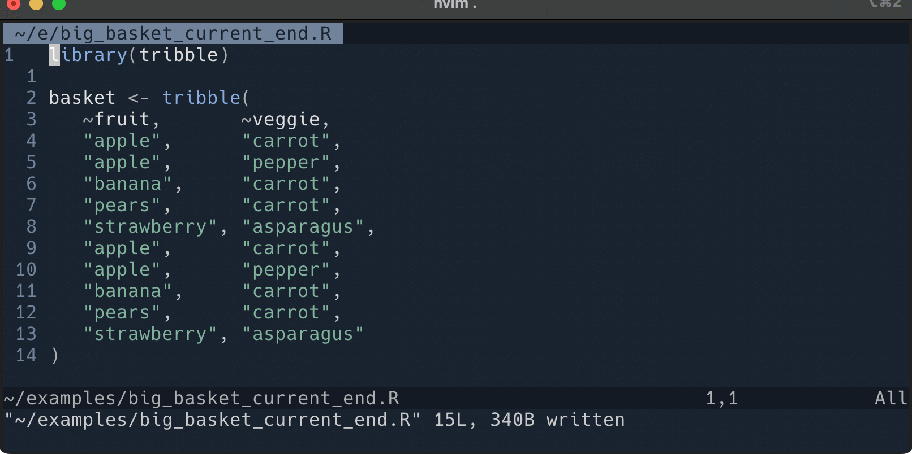
Replacing using visual mode
We can also use visual mode to set the range of the find and replace operation. Just enter visual mode v or visual line mode Shift-v, highlight the range you want your find and replace operation to be applied, enter into command mode with :, and then enter your find and replace statement. Doing this will start the command line off with '<,'>, and you’ll just need to enter the rest of the command, the {pattern} and {string} portions.
:'<,'>s/carrot/kale`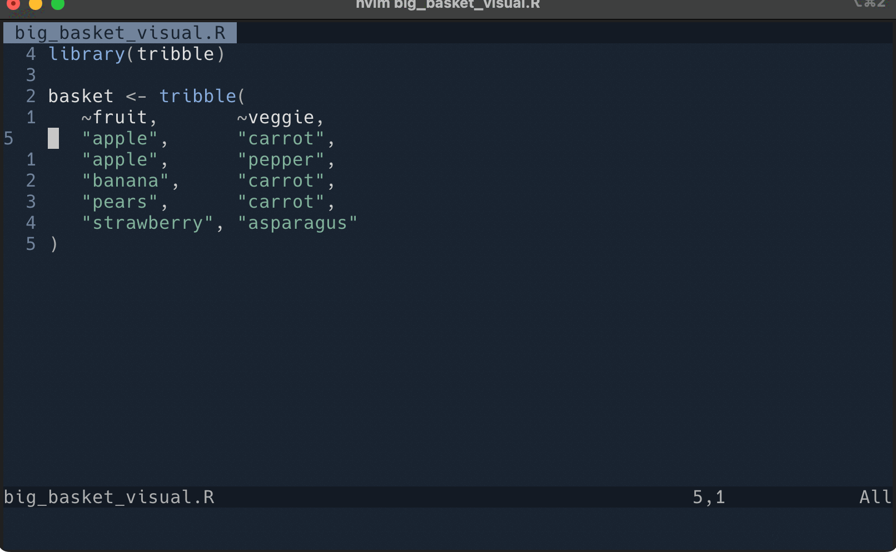
More advanced applications
Use objects in your search buffer
Your previous search history can also be used to do find and replace. Let’s go back to our miles-per-gallon plot example again. First I’ll hover my cursor over the word I want to replace and hit *. Now we can use the search value in our subsititution command. All I need to do is leave the {pattern} blank in the command. The command will look like this:
:%s//horsepower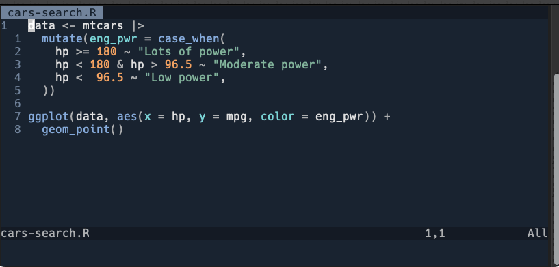
Replace with what’s under your cursor
To keep things simple, let’s go back to our first basket example. Specifically, let’s say I want to modify the string strawberry with the string banana, but use my cursor position to do this. First I have to make sure the cursor is hovering over the word I want to use for my replacement. Then, I enter the below command. When you see <c-r><c-w>, this means you actually hit Ctrl-R and Ctrl-W on your keyboard. You’ll notice the string banana is populated into the command for us.
%s/strawberry/<c-r><c-w>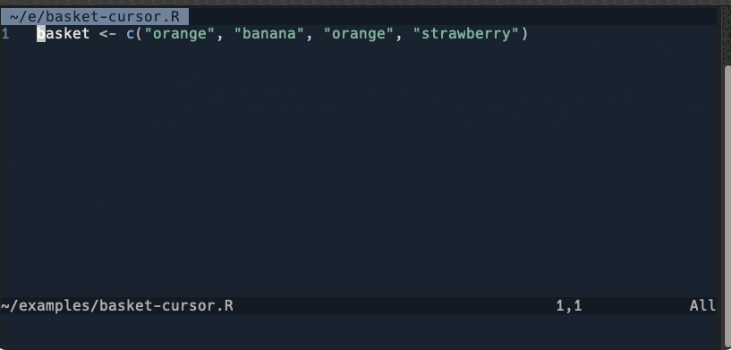
Final thoughts
Well there you have it, a brief description about what I’ve recently learned about using Vim’s :substitute command to perform find and replace tasks. Specifically, TIL that you can use the Vim :s command to:
- Find and replace one or many text strings in a file.
- Find and replace text strings based on a specified range.
- Find and replace text strings using objects stored in Vim’s search buffer.
- Find and replace text strings using text under your cursor.
If you want to try each of these out on your own, I’ve included each example with comments here.
In truth, the above examples are not everything you can do using :substitute, as many powerful features and options are available. One such option is pairing :s with the use of regular expressions. Applying these two tools opens up a wide range of powerful methods to find and replace text within a file. Such applications were beyond the focus of this post, as I just focused on the basics. Nonetheless, I highly suggest reading the docs if you’re interested in more advanced find and replace operations. I also provided some links below to resources I found useful while learning about this topic and writing this post. These are a good starting point to dive deeper into the topic.
Happy editing!
Additional resources
Reuse
Citation
@misc{berke2023,
author = {Berke, Collin K},
title = {TIL: {Find} and Replace in {Vim}},
date = {2023-02-24},
langid = {en}
}